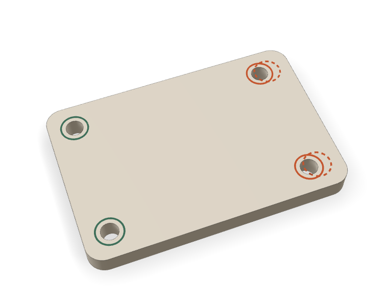
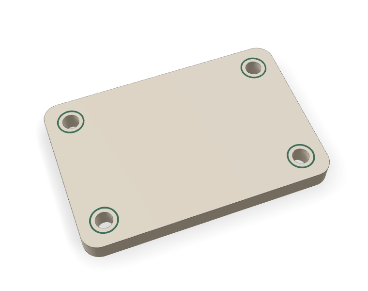

“I need a 60 x 40 mm mounting plate, 5 mm thick, with four 4 mm screw holes 6 mm in from each corner. Flat bottom, rounded corners.”

blocked · exit 4Two holes sit at x 52. The ask put them at x 54. The plan was valid, but the part did not match the request.

conforms · exit 5All 7 measured checks pass. Still with a person: rounded corners, the five views, print settings, a test print.
Recorded in a Debian 13 container with FreeCAD 1.0.0. Output trimmed with jq. Build waits shortened.